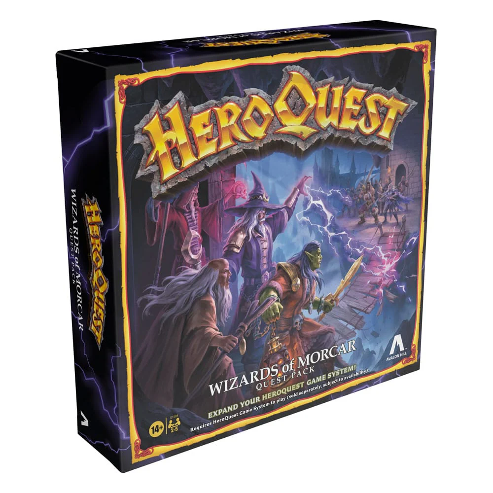

HeroQuest: Wizards of Morcar
"HeroQuest: Wizards of Morcar" is an expansion for the classic board game HeroQuest. This expansion was first released in 1991 and introduces a new adventure set in the Northern Dread Wastes.
Loretome has foreseen the alliance of the realm's most powerful wizards, all of whom have agreed to do Zargon's dark bidding. This time, Zargon seeks the legendary magic of 1000 Dread sorcerers locked away in the High Alter of the Northern Dread Wastes. Stop Zargon from getting his hands on the power-or he will be unstoppable!
The expansion includes new quest scenarios, additional miniatures, and new terrain pieces that reflect the wizards setting.
This expansion is designed to be used in conjunction with the original HeroQuest game, and players will need the core box to fully enjoy the new content and features introduced in "Frozen Horror."
Contents
The "HeroQuest: Wizards of Morcar" expansion includes the following components:
- Quest Book: A 10-part quest book.
- Accessories: Dungean tiles
- Miniatures: 27 plastic figures, including:
- Female Wizard
- Sir Ragnar
- 3 Men at arms - Scouts
- 3 Men at arms - Halberdiers
- 3 Men at arms - Crossbowmen
- 3 Men at arms - Swordsmen
- Storm Master (Boroush)
- Orc Warcaster (Nyashak)
- Necromancer (Fanrax)
- High Mage (Zanrath)
- Articifer (Keeper)
- Magical Barrier - Stone
- Magical Barrier - Fire
- Magical Barrier - Ice
- Minotaur
- 2 Golem
- 2 Dreadshifters
- Punchboard: Contains various cardboard tokens and overlays, such as:
- Articifer's laboratory tile
- Cards: 35 Game Cards, including:
- Wizard character card
- Four Mercenary cards
- Six Articifer spell cards
- Six High Mage spell cards
- Six Necromancer spell cards
- Six Orc Warcaster spell cards
- Six Storm Master spell cards
- Eight Treasure cards
- Four Equipment cards
- Two Artifact cards
- Six Dread Spell cards
- Four Monster cards